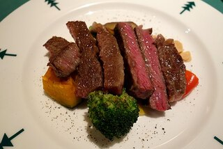

Steak

High quality steak and broccoli
Ingredients
Steak
Broccoli
Seasoning
Butter
Steps
Heat and butter pan
Sear Steak for 3.5 minutes on each side
Preheat oven and leave steak inside until your wanted doneness
Using the pan, sautee the broccoli